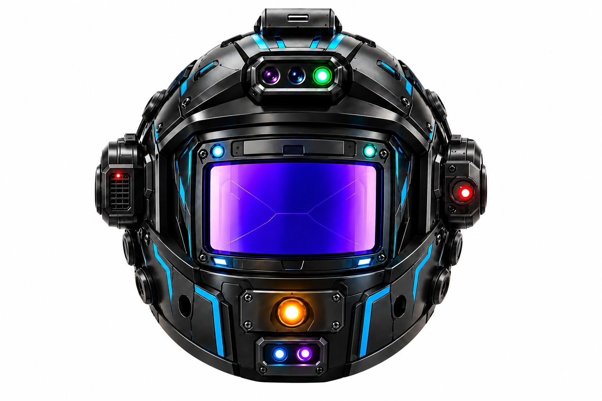
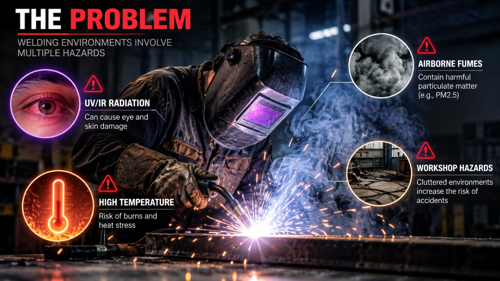
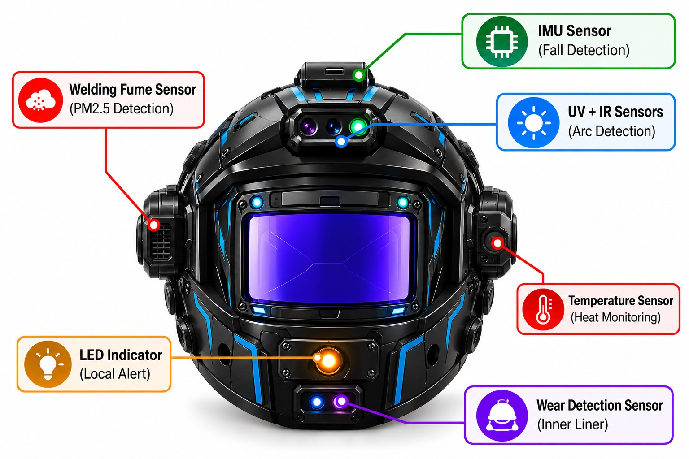
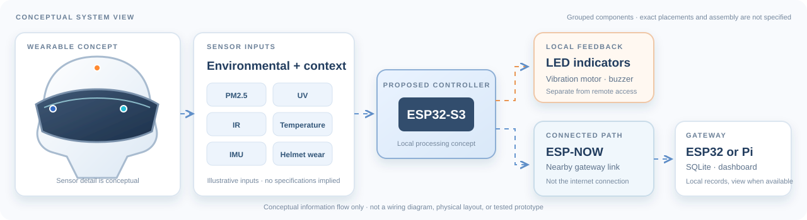
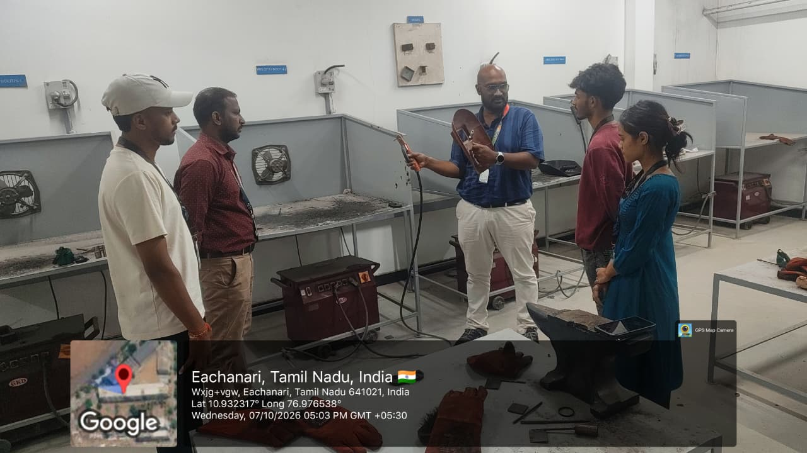

Conditions can shift
Air, light, heat, and movement are part of the welding environment.
SMART INDIA HACKATHON 2026 / TEAM ABACUS
Smart Connected Safety Helmet
for Welding Trades
A connected safety concept designed to sense the work environment, alert locally, and make meaningful information available beyond the workshop floor.

ENVIRONMENT INPUTS LOCAL FEEDBACK
i Illustrative workshop visual — not a documented SafeTrade test environment.
01 / THE CHALLENGE
A welding workday can bring changing conditions and competing demands for attention. Safety depends on protective equipment, awareness, and established procedures working together.
Air, light, heat, and movement are part of the welding environment.
Welding requires concentration, so useful warnings should be clear and local rather than distracting.
The design should distinguish local alerts from remote monitoring.

02 / OUR SOLUTION
SafeTrade explores how sensing, immediate local feedback, and optional gateway monitoring could work together. Select a capability to explore its proposed role.
A proposed particulate input could provide environmental context. It does not establish exposure safety or validated detection.
CONCEPT CAPABILITIES ONLY — NOT CONNECTED TO ACTUAL SENSORS03 / ENGINEERING & WORKFLOW
An illustrative architecture separates immediate helmet feedback from gateway-based monitoring. Select a path to follow the flow.

← Scroll the concept overview on small screens →
Choose a labeled node in the diagram to see its proposed role. Sensor positions and hardware assembly are not specified.
Concept sensor inputs represent environmental conditions, movement, and helmet wear for exploration.
04 / CONCEPT SIMULATION
Adjust illustrative inputs and thresholds to see a browser-only example of sensor comparison, local feedback, and a gateway event.
These controls do not read sensors or determine actual safety.
Run the demonstration to create a sample event. No data leaves this browser.
LOCAL PREVIEW ONLYThis demonstration uses configurable example comparisons only. It is not validated detection, advice, or a substitute for proper protective equipment and procedures.
05 / IMPACT & SAFETY
A thoughtful connected system can be useful without assuming constant connectivity or overstating what a concept can do.
Proposed on-helmet feedback is conceptually available at the wearer, without relying on a remote dashboard.
LOCAL FEEDBACK CONCEPTA nearby gateway could collect example records for a local view when the monitoring path is available.
GATEWAY-DEPENDENTGateway records may be queued locally and forwarded when the gateway's internet connection returns.
PROPOSED BEHAVIORLocal alert concepts remain distinct from remote monitoring. ESP-NOW carries a nearby link to the gateway; it is not the gateway's internet connection. If internet is unavailable, the gateway may retain records locally for later forwarding.
SafeTrade is intended to supplement certified protective equipment and established welding-safety procedures, not replace them.
06 / CASE STUDY
A workshop visit can help shape design questions and keep a concept connected to real working environments.

Project-supplied workshop-visit photograph. It documents context only, not a SafeTrade prototype test.
The visit provides context for asking better questions about protective gear, attention, and how information might be useful on the shop floor.
Use this space for factual, documented observations from the visit.
Relate confirmed observations to design considerations—without implying validated performance.
Context for concept development only. The visit does not establish prototype testing or validation.
CASE STUDY / VISIT CONTEXTNO PROTOTYPE TESTING OR VALIDATION CLAIMED
07 / OUR TEAM
The team behind the SafeTrade smart connected safety helmet concept.
Team Leader & System Integration
Web Development & Dashboard Design
Research & Documentation
Safety Analysis & Testing
Sensor Integration & Embedded Systems
Helmet Mechanical Design & Hardware Assembly
08 / OUR MENTORS
We are grateful for the guidance supporting the SafeTrade concept and its development.
Head – School of Design and Innovation
Rathinam Technical Campus
Head – Technical Competitions and Hackathons
Rathinam Technical Campus